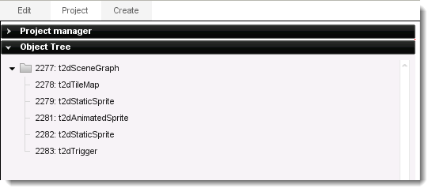

Introduction
In this section, you will learn about the primary interface of
Torque 2D and what all its bells and whistles do. Torque 2D's primary
scene editor interface consists of many powerful tools and features to
help you make your next game a reality. When you first open the
Torque 2D editor, you will see your project and its assets loaded into
the different tool windows. For the purpose of this documentation, we
will be using the example "RainyDay", which you can build by following this
tutorial.
RainyDay example project, compiled and running.
Interface
Upon opening the RainyDay project in Torque 2D, your screen will look something like this:
Scene View The Scene View is where the bulk of your work will be done. This is a
WYSIWYG representation of your game's scene. The following commands and
hot-keys function in the Scene View:
Move Camera: Hold Right Mouse Button and Drag Mouse
Zoom Camera: Scroll Wheel
Group Select: Hold Left Mouse Button and Drag Mouse
Resize Object: Click the object, then drag the Blue handles on its sides.
Modify Object Properties: Click the object, then move the mouse cursor near the top to display its Edit Buttons.
Modify Object Scripting Properties: Click the object, then click on the 'Edit' tab in the right most menu.
File Menu
File Menu allows you to:
Create, save, open, and close Scenes and Projects;

Edit Menu allows you to:
- Control editor actions such as undo and redo;
- Cut, copy, paste, and delete objects you have selected;
- Move selected object to the layer the furthest away from the camera, or the closest layer.
- Access the editor Preferences.
Project Menu allows you to:
- Return to the project loading screen
- Import Imagemaps into your project
- Update images to the latest stored on your drive
View Menu allows you to:
- Jump to the start position of the game's camera, or its Home
- Orient the camera to fit all objects in the scene within the Scene View
- Orient the camera to fit all selected objects in the scene within the Scene View
- Quickly adjust the zoom of the camera to 25%, 50%, 100%, 200% or 400%
Help Menu allows you to:
- Access the Torque 2D Documentation
- Review and edit the Keyboard Shortcuts for the Torque 2D editor
- Access the Torque 2D Community in your Web Browser (Your browser will automatically open)
- Read the development credits and see the engine and editor versions, along with any Addons you currently have installed
Toolbar
The toolbar provides a series of icons that represent various editor
actions. The following descriptions are in order of left to right:
Create a New Scene
Open an Existing Scene
Save Changes to Current Scene
Edit level datablocks in Visual Studio 2005
Edit level datablocks in Visual Studio 2008
Move Selection to Clipboard
Copy Selection to Clipboard
Paste Objects in Clipboard
Undo Last Change
Redo Last Change
Move Selection Up one Layer
Move Selection Down one Layer
Play Game
Selection Tool
Text Edit Tool
Camera Tool
Full Box Selection - When active, requires an entire object to be in the selection range.
Snap to Grid
Project tab info
The Project Tab is broken into 5 sections. We'll discuss each individually.
Project Manager
- Reload Project - Reloads the current project, refreshing all scripts and images
- Open Project Folder - Opens the project folder in the Finder
- Open VS2008 Project - Open's the project in Visual Studio 2008
- Open VS2005 Project - Open's the project in Visual Studio 2005
- Open XCode Project - Open's the OSX project in Xcode
Object Tree

- Tree-based representation of all objects in the current scene, organized in their appropriate hierarchy
Undo History
- History of recent actions performed in the editor. Double-click on an entry to rewind the editor back to that point
Edit Tab
All object editing happens in the Edit Tab. This section of the
editor display all the properties for an object. Specialized objects,
like static sprites or scrollers, have their own unique properties
(typically displayed at the top of the Edit Tab). However, all objects
share the same set of common properties.
Common Object Properties
Because every object in your scene is essentially a t2dSceneObject,
all objects share certain common properties. This section lists out
common properties that every object has.
Behaviors
Behaviors are pieces of code that give a particular object a
specific... well, behavior! Whether you want to turn a certain object
into an enemy, make it move back and forth, move to wherever the player
touches the screen or more - Behaviors allow you to very quickly add
code to an object without need to do a lot of extra work.
To select one of your behaviors, choose it from the Drop Down List and
press the green plus button. Your project must have behaviors associated
with it for this list to have anything in it.
Scene Object
- Position
- X - The position of this object upon the X axis in the scene
- Y - The position of this object upon the X axis in the scene.
- Size
- Width - The width of this object
- Height - The height of this object
- Rotation - The rotation of this object, in degrees
- Auto Rotation - The speed that this object will
automatically rotate when loaded into the scene. Positive will rotate
clockwise, negative will rotate counter clockwise
- Flip Horizontal - If true, the object will be flipped horizontally
- Flip Vertical - If true, the object will be flipped vertically
- Sort Point
- X - The X position, relative to the object, that the Sort Point is located
- Y - The Y position, relative to the object, that the Sort Point is located
- Layer - Which depth layer that this object will exist upon
- Group - Which object group that this object will be in
- Back/Forward - Moves the object backwards and forwards
within the layer it is in. Use this if you have multiple objects in the
same layer and need to adjust their sorting
- Lifetime - How long this object will exist
- Visible - If true, the object is visible in the scene. If false, the object will not render
Align
Modify how this object is aligned with the camera view.
- - Align to the horizontal center
-
 - Align to the right - Align to the right
-
 - Align the to vertical center - Align the to vertical center
-
 - Align to the bottom - Align to the bottom
- - Match horizontal size to horizontal viewport size
-
 - Match vertical size to vertical viewport size - Match vertical size to vertical viewport size
-
 - Match size of object to the viewport size - Match size of object to the viewport size
Scripting

- Persist - Set this object to persist across all levels
- Config Datablock - The configuration datablock to associate this sceneobject with
- Name - Name the object for referencing in script
- Class - Link this object to a Class
- Super Class - Link this object to a Parent Class
- Use Mouse Events - Enable mouse callbacks on the object
Collision
- Send Collision - This object sends collision events
- Receive Collision - This object receives collision events
- Send Physics - This object sends physics events
- Receive Physics - This object receives physics events
- Callback - This object handles collision events in script
callback functions. If you wish to do more than the simple Collision
Response defined below you must check this box
- Detection Mode - This selects which mode you wish to use to
detect collisions
- FULL - This uses the entire sprite boundary to detect
collisions. Ok for rectangular objects
- CIRCLE - This uses a circle that fits the widest dimension of
your sprite to detect collisions
- POLYGON - (Default) This uses the collision polygon defined for
the sprite. You can edit this polygon by selecting "Edit this object's
collision polygon" from the object's Selection Editor Toolbar
- CUSTOM - This is for generating custom C++ collision response
calls and is an advanced feature
- Collision Response -
This selects the physical behaviour you wish your objects to have when they
collide.
- CLAMP - The object will stop when it collides with another
object
- BOUNCE - (Default) The object will bounce off of the other
object in a collision
- STICKY - The object will stick to the collision target
- KILL - The object will be destroyed on collision
- RIGID - The object's behavior is calculated using basic rigid
body physics
- Collision Layers - This determines which scene layers to use
when detecting collisions. All are selected by default
- Collision Groups - This determines which Scene Object groups to
use when detecting collisions. All are selected by default
Physics
- Velocity - The speed in units per second that the object is
moving in the X and Y directions.
Positive values are to the right and down, respectively, while negative values
are to the left and up, respectively. Min and Max
values determine the minimum and maximum speeds for your object
- Angular Velocity -
- Immovable - This object cannot be moved by physics events
- Forward Only - Allows the object to only move in its forward
direction
- Constant Force - Applies a steady force in the desired amount
in the X and Y directions. Could be used
to simulate wind force, etc
- Gravitic - This object has a steady downward force applied to
it, as if it were affected by gravity
- Force Scale - Scales the magnitude of all forces applied to the
object
- Calculate Mass and Inertia - Uses the object's defined
attributes below for determining physics reactions in a more realistic fashion
- Mass - The object's mass
- Inertia - The object's inertial moment
- Density - The object's density
- Damping - Damping force applied to motion
- Friction - Friction when moving against other objects
- Restitution - Value used to decide when the object has come to
rest
Mounting
- Rotation - Mount Rotation
- Auto Rotation - Automatic Mount Rotation
- Mount Force - (Only available when object is mounted) If
this is not zero, this "tightens" or "loosens" how quickly the mounted
object follows the parent, with lower numbers resulting in the mounted
object taking longer to "catch up to" the parent
- Track Rotation - (Only available when object is mounted) If this is checked the mounted object will rotate with its parent object
- Owned by Mount - (Only available when object is mounted) Owned by Mount
- Inherit Attributes - (Only available when object is
mounted) If this is checked the mounted object will inherit the object
properties (such as visibility) of the parent object
World Limits
- Limit Mode - The selected Limit Mode affects what occurs when the object touches the edges of the bounds of the World Limits.
- Off - The world limits are not even tested by the object
- Null - The world limits are tested, but no action is
taken when the object reaches the limits; it just continues on its way.
This mode is used in combination with the Callback checkbox to script
your own responses to reaching the world limits
- Clamp - The object bounces off the world limits in a simple, pong-like way and doesn't include spin
- Bounce - The object slides along the world limits and will not move past them
- Sticky - The object stops all movement when it touches the world limits
- Kill - The object deletes itself when it touches the world limits
- Min Bounds - The minimum X and Y position of the bounds
for the World Limit. This can be edited here, however is also modified
by using the visual World Limit Editor
- Max Bounds - The maximum X and Y position of the bounds
for the World Limit. This can be edited here, however is also modified
by using the visual World Limit Editor
- Callback - If true, will cause a script-response to
occur when the World Limits are reached. In your script, the callback
for this object should look like this to function:
function myObject::onWorldLimit(%this, %mode, %limit)
{
// %mode will be one of the following strings:
// off, null, bounce, clamp, sticky, kill
// %limit will be one of the following strings:
// top, bottom, left, right
}
Alpha Testing
- Alpha Test Value - Enables alpha testing for this object if the value is between 0 - 255. Set to -1 to disable Alpha Testing
- Blending
- Enabled - Enable blending for this object
- Source Factor - Source blend factor for this object. These represent constants in the format (R, G, B, A).
- ZERO - The blend factor is (0, 0, 0, 0)
- ONE - The blend factor is (1, 1, 1, 1)
- DST_COLOR - The blend factor is (R, G, B, A) of the destination pixel applied as alpha to each channel
- ONE_MINUS_DST_COLOR - The blend factor is (1 - R, 1 - G, 1 - B, 1 - A) of the destination pixel applied as alpha to each channel
- SRC_ALPHA - The blend factor is (A, A, A, A) of the source pixel alpha channel
- ONE_MINUS_SRC_ALPHA - The blend factor is (1 - R, 1 - G, 1 - B, 1 - A) of the source pixel applied as alpha to each channel
- DST_ALPHA - The blend factor is (A, A, A, A) of the destination pixel alpha channel
- ONE_MINUS_DST_ALPHA - The blend factor is (1 - A, 1 - A, 1 - A, 1 - A) of the destination pixel alpha channel
- SRC_ALPHA_SATURATE - The blend factor is (f, f, f, 1) where f = min(Asource, 1 - Adestination)
- Destination Blend Factor - Destination blend factor for this object. These represent constants in the format (R, G, B, A)
- ZERO - The blend factor is (0, 0, 0, 0)
- ONE - The blend factor is (1, 1, 1, 1)
- SRC_COLOR - The blend factor is (R, G, B, A) of the source pixel applied as alpha to each channel
- ONE_MINUS_SRC_COLOR - The blend factor is (1 - R, 1 - G, 1 - B, 1 - A) of the source pixel applied as alpha to each channel
- SRC_ALPHA - The blend factor is (A, A, A, A) of the source pixel alpha channel
- ONE_MINUS_SRC_ALPHA - The blend factor is (1 - R, 1 - G, 1 - B, 1 - A) of the source pixel applied as alpha to each channel
- DST_ALPHA - The blend factor is (A, A, A, A) of the destination pixel alpha channel
- ONE_MINUS_DST_ALPHA - The blend factor is (1 - A, 1 - A, 1 - A, 1 - A) of the destination pixel alpha channel
- Blend Color
- Red - Red Blending Value
- Green - Green Blending Value
- Blue - Blue Blending Value
- Alpha - Alpha (Transparency) Blending Value
Dynamic Fields
Each entry specifies another Dynamic Field for the object. Their
functionality should be defined in the scripts that utilize the object.
Object Specific Object Properties Some objects have different property fields than others. All Object Specific property fields are listed out in this section.
Editor input bindings (mouse, keyboard, shortcuts)
The following are the default bindings for the Torque 2D editor.
These can be modified by accessing the 'Keyboard Shortcuts...' option
under the Help Menu.
- lbracket - Move Selection One Layer Closer to Camera
- rbracket - Move Selection One Layer Away From Camera
- escape - Activate the Selection Tool
- C - Show the Create Panel
- P - Show the Project Panel
- home - Sets the camera to the selected device scene limits
- end - Sets the camera to show all scene contents
- Equals - Zoom the View Window In
- Minus - Zoom the View Window Out
- left - Move the View Window Left
- right - Move the View Window Right
- up - Move the View Window Up
- down - Move the View Window Down
- ctrl-Z - Undo The Last Action
- ctrl-shift-Z - Redo an Undone Action
- ctrl-c - Copy the Selected Objects
- ctrl-x - Cut the Selected Objects
- ctrl-v - Paste Cute or Copied Objects
Conclusion
The Torque 2D editor is intended to be entirely WYSIWYG. The way you
layout and develop a scene within the editor is the same way that the
scene will look when loaded on your target platform. Having read
through the Interface Instructions, you should now understand the basics
of using the Torque 2D editor, how to operate the various menus, and in
what ways you need to interface with the editor to build your game. |